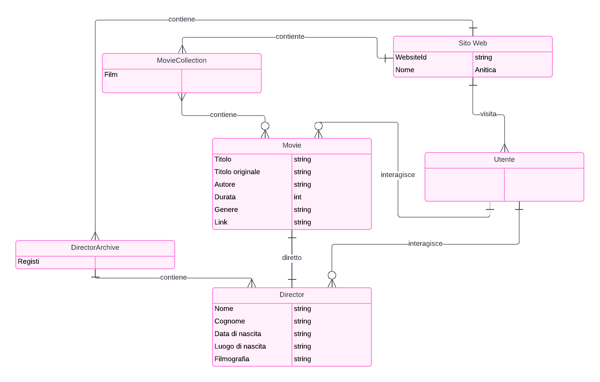
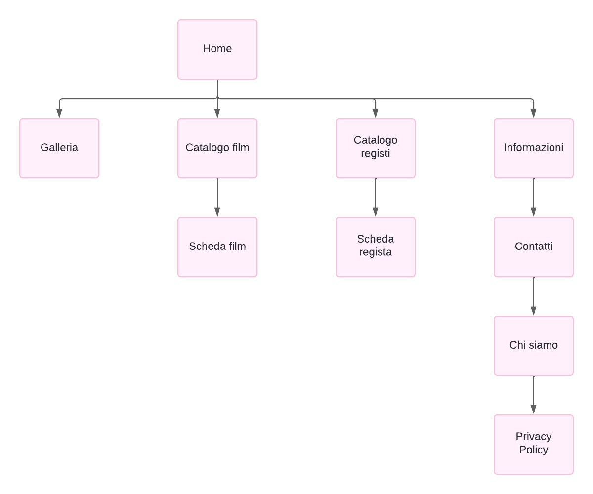
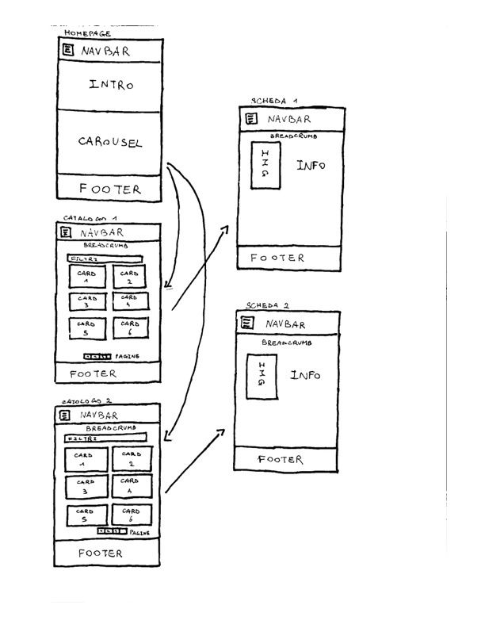

1. Brief
1.1 Finalità e obiettivi del progetto
Il sito “Anitica” si pone come risorsa utile agli studiosi, ai curiosi e agli appassionati del cinema animato. Esso offre una panoramica sull’argomento e collezioni di schede informative riguardanti film e registi in modo da rendere più facili da reperire le informazioni, dato che sono poche e molto sparse.
1.2 Pubblico di riferimento
Il sito si rivolge ad un pubblico che potrebbe essere composto da appassionati di animazione di tutte le età e provenienze, interessati a esplorare un ambito meno conosciuto come quello dell'animazione sovietica.
1.3 Accesso alla risorsa
Considerato il pubblico target, il sito sarà progettato per garantire un'esperienza di navigazione ottimale su una varietà di dispositivi compresi PC, tablet e smartphone. L'interfaccia sarà responsive e user-friendly.
1.4 Contenuti
1.4.1 Nel prototipo
Il sito offre una vasta gamma di contenuti, tra cui: schede dei registi e dei film con informazioni generali riguardo entrambi.
1.4.2 Sviluppi futuri
In futuro il sito si impegnerà a espandere la collezione di contenuti con nuove schede e approfondimenti (articoli). Gli utenti potranno iscriversi ad una newsletter settimanale per ricevere consigli di visione. Inoltre, potranno registrarsi sulla piattaforma e creare una propria watchlist inserendo in una lista i loro film preferiti. Infine, sarà presente una galleria delle scene più iconiche.
2. Benchmark
2.1 Analisi di mercato
Ad oggi è difficile trovare una collezione completa e approfondita di film di animazione sovietici. Qualora un curioso volesse approfondire l'argomento potrà usufruire di questo sito come strumento di documentazione.
2.2 Siti esistenti
2.2.1 Wikipedia
Wikipedia ha una pagina riguardante la storia dell'animazione sovietica fino ad oggi, tuttavia non tratta nello specifico tutti i film e i vari registi.
2.2.2 Articoli web
Durante la ricerca sono stati trovati articoli che trattavano in particolare alcuni registi e film, ma sono relativamente brevi e poco esaustivi. Inoltre spesso appartengono a siti che trattano argomenti più vasti, e non si è a conoscenza della loro attendibilità.
2.2.3 YouTube
Su YouTube si possono trovare alcuni dei film che vengono trattati, alcuni sono molto datati e perciò più facili reperirli
3. Struttura
3.1 Mappa concettuale

3.2 Albero delle dipendenze

3.2 Descrizione di un item foglia
Film:
- Titolo in Italiano
- Titolo originale
- Regista
- Link alla sua pagina dedicata
- Data di uscita
- Durata
- Genere
- Collegamenti
Regista:
- Nome
- Cognome
- Data di nascita
- Eventuale data di morte
- Luogo di nascita
- Filmografia
4. Layout
4.1 Wireframes

4.2 Homepage
Nella Homepage, a partire dall’angolo in alto a sinistra si trova posizionato sulla navbar il nome del sito affiancato da un menu a tendina che una volta aperto darà quattro possibili scelte: Film, Registi, Galleria, Chi siamo. Alla fine della navbar è collocata la barra di ricerca. Subito sotto si trova il corpo che contiene due distinte sezioni: la prima riporta un accenno introduttivo, mentre la seconda manda alla raccolta di film e registi. Alla fine della pagina sono collocati altri link ed approfondimenti.
4.3 I Cataloghi
I due catologhi si presentano allo stesso modo ma i contenuti sono diversi, entrmabi presentano una selezione di filtri per ordinare a piacimento le schede dei film e dei registi, mentre alla fine vi è la possibilità di navigare tra le diverse pagine dei cataloghi
4.4 Le schede
Le schede relative a film o autori si presentano rispettivamente con una foto della locandine del film o dell'autore per poi presntare le informazioni princiapali
5. Usabilità
Il sito "Anitica" è progettato per offrire una navigazione intuitiva e piacevole. Il menu di navigazione principale è chiaramente visibile nella parte superiore di ogni pagina e consente di accedere facilmente alle sezioni Film, Registi e altre risorse chiave. Le schede informative e le collezioni sono organizzate in modo da fornire una panoramica rapida dei contenuti disponibili, mentre i collegamenti all'interno delle schede facilitano ulteriormente la navigazione.
5.1 Architettura
L'architettura del sito è suddivisa in sezioni tematiche principali: Home: Offre una panoramica della storia dell'animazione sovietica, mettendo in evidenza i contenuti chiave del sito. Film Collection: Un catalogo dettagliato dei film d'animazione sovietici, completo di descrizioni, link e profili dei registi. Director Collection: Una sezione dedicata ai profili dei registi sovietici, ciascuno con biografia, filmografia e link correlati. Altro: Galleria, Chi Siamo e altre risorse sono presenti per offrire informazioni aggiuntive.
5.2 Aspetto e tipografia
Il sito utilizza un design moderno e essenziale per far rislatare le immagini che richiamano la storia.
5.3 Colori, icone e font
Non è stato fatto uso particolare di colori per rimanere in tema realistico e "severo". Le icone e i pulsanti seguono un tema simile, utilizzando forme semplici e pulsanti con bordi arrotondati. I font principali sono Arial e sans-serif.
6. Servizi
- Newsletter: Gli utenti possono iscriversi alla newsletter per ricevere consigli di visione.
- Galleria: Una sezione dedicata a immagini e materiali multimediali correlati all'animazione sovietica.
- Assistenza: Una pagina di supporto per rispondere alle domande frequenti e fornire aiuto.
6.1 Strumenti di Browsing
Il sito dispone di diverse funzionalità per migliorare la navigazione:
- Ricerca: Una barra di ricerca integrata consente agli utenti di trovare rapidamente contenuti specifici.
- Breadcrumbs
- Carousel
6.2 Strumenti di Interazione
Gli strumenti di interazione disponibili includono:
- Newsletter: Iscrizione tramite email per ricevere contenuti esclusivi.
- Menù a tendina.
- Barra di ricerca.
- Collegamenti vari.
6.3 Sviluppi futuri
Alcuni sviluppi futuri previsti per il sito includono:
- Espansione delle Collezioni: Aggiunta di nuovi registi e film per ampliare ulteriormente le collezioni.
- Galleria Multimediale: Una sezione più dettagliata dedicata a immagini e video.
- Watchlist: Integrando la possibilità per l'utente di raccogliere in una sezione apposita i contenuti che preferisce.
7. Bibliografia
-
Per il web project plan e l'informatica umanistica
- Francesca Tomasi, slide del corso di Informatica Umanistica, a.a. 2022-2023
-
Per i contenuti
- Wikipedia
- IMDB
- MUBI
-
Per le mappe
- Lucidart
-
Per il codice
- Bootstrap.com
- Martina Dello Buono, slide per il laboratorio del corso di Informatica Umanistica, a.a. 2022-2023
- Stackoverflow
- W3schools
- Intellij IDEA (IDE)